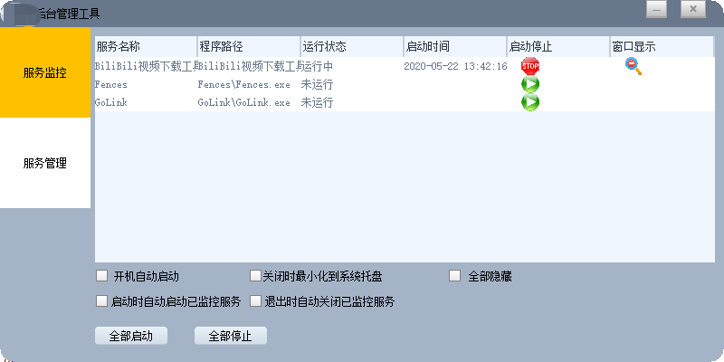

高俊健
 13533260451
13533260451
 gongluck93@gmail.com
gongluck93@gmail.com


 个人信息
个人信息
- 男，1993 年出生
- 求职意向：C/C++/go 研发工程师
- 工作经验：4 年
- 期望薪资：15k+
 教育经历
教育经历
- 学士，广州中医药大学，计算机科学与技术专业，2012.9~2016.7
- 通过了 CET4 英语等级考试
 工作经历
工作经历
高新兴科技集团股份有限公司，AR产品线软件研发部，高级C++开发工程师，2018.2~2020.6
1.视频地图引擎C++SDK(VGIS)的新功能开发和维护，及相关测试程序的开发。 2.旧有后台服务的维护和平台迁移(windows服务迁移到centos)，及服务监控管理程序的开发和维护。 3.现场数据接入网关开发。
广东安居宝数码科技股份有限公司，监控研发部，C++开发工程师，2016.6~2018.1
1.智能监控平台及停车场系统客户端开发。 2.监控摄像头及显示屏SDK的二次开发。 3.其他网络摄像头SDK的测试和系统功能模块的设计。
 项目经历
项目经历
VGISSDK 项目
技术栈：C++(11) + Boost + 多线程 + 动态库 + http + 数据加解密 + ndk
项目介绍：视频地图引擎(VGIS)SDK集平台设备管理、视频点流、GIS转换视频坐标、告警数据订阅等功能，供上层应用开发。本部门主要产品都是基于这个项目开发。除了输出windows平台的动态库，同时也通过ndk输出安卓端的so库。
我的职责： 1、新平台接入： 1）通过postman和ie验证平台协议功能完整可用，并及时返回上级部门补充新功能或修复缺陷。 2）将平台协议功能编码进VGISSDK，并且保持暴露给上层的接口不变。 2、新功能添加： 1）进行必要的技术预研，开源网络库(mongoose)、openssl的编译使用、base64实现等。 2）新功能编码测试。 3、bug修复： 1）通过日志分析问题原因。 2）通过dump文件定位问题。 3）修复VGIS内部代码缺陷或者将缺陷反馈给平台开发负责人。
后台服务管理工具 项目 
技术栈：C++(11) + Win32 API + Duilib + WMI
项目介绍：后台服务管理工具能实时监控项目后台服务(exe和cmd.exe运行的java服务)的工具。用户可以非常直观的对项目中的后台服务进行管理，以及随时查看服务的运行状态。
我的职责： 1、界面设计： 1）使用Duilib界面设计师工具设计界面。 2、具体功能实现： 1）使用Win32原生API对后台服务程序进行启动、关闭、显示、隐藏等操作。 2）使用WMI查询服务的启动参数。 3）支持工具自身配置的存取，以及打开监控服务的配置文件。
智能停车场系统 项目
技术栈：C++(11) + Win32 API + Duilib + SAPI + ffmpeg + TinyXml
项目介绍：智慧停车场支持车牌(车脸)识别、道闸控制、智能计费、客户(车牌)信息管理和语音播报等功能。本系统开发周期较长，但最终在广州大学城和佛山都有落地使用。
我的职责： 1）设计客户端dui界面。 2）利用TinyXml库实现可批量读取xml文件版本的动态链接库。 3）根据提供的网络接口设计客户端资源文件更新程序。 4）设计客户端资源文件更新程序。 5）把SAPI简单封装成TTS库。 6）利用ffmpeg库解码音频。 7）其他客户端功能设计。
 技能清单
技能清单
- ★★★ C/C++
- ★★☆ Win32、MFC、Qt
- ★☆☆ Golang
- ★☆☆ FFmpeg、SDL